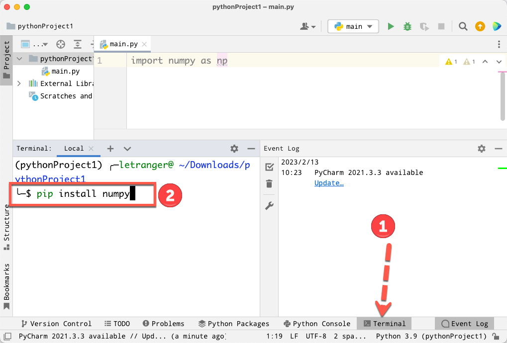
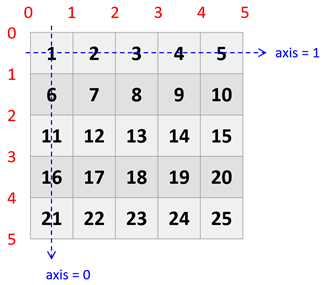
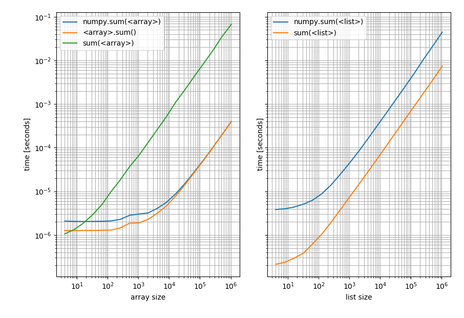
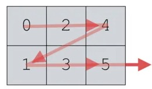

Numpy
Table of Contents

1. What and How
1.1. Numpy簡介
- NumPy 是 Python 語言的一個擴充程式庫。支援高階大量的維度陣列與矩陣運算，此外也針對陣列運算提供大量的數學函式函式庫。
- Numpy 主要用於資料處理上。Numpy 底層以 C 和 Fortran 語言實作，所以能快速操作多重維度的陣列。1
- 當 Python 處理龐大資料時，其原生 list 效能表現並不理想（但可以動態存異質資料），而 Numpy 具備平行處理的能力，可以將操作動作一次套用在大型陣列上。
- Python 多數重量級的資料科學相關套件（例如：Pandas、SciPy、Scikit-learn 等）都幾乎是奠基在 Numpy 的基礎上。因此學會 Numpy 對於往後學習其他資料科學相關套件打好堅實的基礎。
- NumPy 的前身 Numeric 最早是由 Jim Hugunin 與其它協作者共同開發，2005 年，Travis Oliphant 在 Numeric 中結合了另一個同性質的程式庫 Numarray 的特色，並加入了其它擴充功能而開發了 NumPy。NumPy 為開放原始碼並且由許多協作者共同維護開發。2
- 延伸閱讀:
1.2. 使用Numpy模組
1.2.1. 安裝
1: pip install numpy
PyCharm

Figure 1: PyCharm
Colab
1: !pip install numpy
1.2.2. 匯入
- 使用模組裡的函式要加模組名稱
import numpy
- 匯入 numpy 模組並使用 np 作為簡寫，這是 Numpy 官方倡導的寫法
import numpy as np
2. NumPy 陣列
2.1. NDArray
- Numpy 中的一維ndarray稱為vector(向量)
- Numpy 中的多維資料型別稱為 ndarray(陣列)
- Numpy 的重點在於陣列的操作，其所有功能特色都建築在同質且多重維度的 ndarray（N-dimensional array）上。
axis 0, axis 1, axis 2:
- 一維時 axis 0 為 x 軸
- 二維時 axis 0 為 y 軸

Figure 2: Axis in ndarray
- 一維時 axis 0 為 x 軸
2.2. 陣列? 矩陣?
在這裡我把numpy的ndarray稱為陣列而非矩陣，因為numpy裡另有一種matrix(矩陣)的資料型態，二者的差異如下3
2.2.1. 結構與維度
- ndarray：ndarray 是 NumPy 的核心數據結構，它可以是多維數組，不局限於二維。可以是一維、二維、甚至更高維的數據結構。
- matrix：matrix 是一種專門為線性代數設計的二維數據結構。無論輸入的數據形狀如何，matrix 永遠是二維的。即使是一維向量，轉換為 matrix 後也會被視作一個二維矩陣。
2.2.2. 操作符行為差異
- ndarray：ndarray 的 * 操作符執行的是元素對應相乘（element-wise multiplication），這適用於所有數組維度。
- matrix：matrix 的 * 操作符執行的是矩陣乘法，即線性代數中的點積(dot)操作。
2.2.3. 示例
1: import numpy as np 2: 3: # 使用 ndarray 4: A = np.array([[1, 2], [3, 4]]) 5: B = np.array([[5, 6], [7, 8]]) 6: print('=== A ===') 7: print(A) 8: print('=== B ===') 9: print(B) 10: 11: print('=== A * B ===') 12: print(A * B) # 元素對應相乘 13: 14: # 使用 matrix 15: A_matrix = np.matrix([[1, 2], [3, 4]]) 16: B_matrix = np.matrix([[5, 6], [7, 8]]) 17: print('=== A_matrix * B_matrix ===') 18: print(A_matrix * B_matrix) # 矩陣乘法
=== A === [[1 2] [3 4]] === B === [[5 6] [7 8]] === A * B === [[ 5 12] [21 32]] === A_matrix * B_matrix === [[19 22] [43 50]]
2.3. 建立 ndarray
2.3.1. 一維陣列(vector)
可以將 python 的 list 或 tuple 轉成 numpy ndarray
1: import numpy as np 2: np1 = np.array( [1, 2, 3, 4] ) 3: print(np1)
[1 2 3 4]
使用 np.arange( ) 方法
1: import numpy as np 2: 3: np2 = np.arange(5) 4: print("=====np2=====") 5: print(np2) 6: np3 = np.arange(1, 4, 0.5) 7: print("=====np3=====") 8: print(np3)
=====np2===== [0 1 2 3 4] =====np3===== [1. 1.5 2. 2.5 3. 3.5]
np.arange() v.s. range()
差異：
- range()為 python 內建函數
- range()return 的是 range object，而 np.nrange() return 的是 numpy.ndarray()
- range()不支援 step 為小數，np.arange()支援 step 為小數
簡單的陣列運算
1: import numpy as np 2: np1 = np.array([1, 2, 3]) 3: np2 = np.array([3, 4, 5]) 4: # 陣列相加 5: print(np1 + np2) # [4 6 8] 6: # 顯示相關資訊 7: print(np1.ndim, np1.shape, np1.dtype)
[4 6 8] 1 (3,) int64
2.3.2. 二維陣列
於陣列人指定x軸或y軸:
- 1維時 axis 0 為 x 軸
- 2維時 axis 0 為 y 軸
1: import numpy as np 2: 3: np4 = np.array( [[1, 2, 4], [3, 4, 5]] ) 4: print("shape:", np4.shape) 5: print("np4:\n", np4) 6: print("取出第0列(row):",np4[0]) 7: print("取出第0行(column):",np4[:, 0]) 8: np5 = np.array([np.arange(1, 10, 2), np.arange(10, 20, 2)]) 9: print('np5:\n', np5) 10: np6 = np.arange(8).reshape(2, 4) 11: print('np6:\n', np6) 12: print(np6.ndim, np6.shape, np6.dtype)
shape: (2, 3) np4: [[1 2 4] [3 4 5]] 取出第0列(row): [1 2 4] 取出第0行(column): [1 3] np5: [[ 1 3 5 7 9] [10 12 14 16 18]] np6: [[0 1 2 3] [4 5 6 7]] 2 (2, 4) int64
2.3.3. 多維陣列
如何自由的轉換陣列形狀: reshape()
1: import numpy as np 2: 3: np7 = np.arange(24).reshape(2, 3, 4) 4: print('np7:\n',np7) 5: 6: np8 = np.arange(13, 60, 2).reshape(2, 3, 4) 7: print("np8:\n", np8) 8: print(np8.ndim, np8.shape, np8.dtype)
np7:
[[[ 0 1 2 3]
[ 4 5 6 7]
[ 8 9 10 11]]
[[12 13 14 15]
[16 17 18 19]
[20 21 22 23]]]
np8:
[[[13 15 17 19]
[21 23 25 27]
[29 31 33 35]]
[[37 39 41 43]
[45 47 49 51]
[53 55 57 59]]]
3 (2, 3, 4) int64
2.3.4. 隨機陣列
numpy.random.randint()
語法：numpy.random.randint(low, high=None, size=None, dtype=’l’)
函式的作用是，返回一個隨機整型數，範圍從低（包括）到高（不包括），即[low, high)。
如果沒有寫引數 high 的值，則返回[0,low)的值。
1: import numpy as np 2: np.random.seed(0) 3: 4: x1 = np.random.randint(10, size=6) 5: x2 = np.random.randint(10, size=(3,4)) 6: x3 = np.random.randint(10, size=(3,4,5)) 7: print(x1) 8: print(x2) 9: print(x3)
[5 0 3 3 7 9] [[3 5 2 4] [7 6 8 8] [1 6 7 7]] [[[8 1 5 9 8] [9 4 3 0 3] [5 0 2 3 8] [1 3 3 3 7]] [[0 1 9 9 0] [4 7 3 2 7] [2 0 0 4 5] [5 6 8 4 1]] [[4 9 8 1 1] [7 9 9 3 6] [7 2 0 3 5] [9 4 4 6 4]]]
numpy.random.rand()
根據給定維度生成(0,1)間的資料，包含 0，不包含 1
- 範例
1: import numpy as np 2: 3: np.random.seed(9627) #設置相同變數，每次生成相同亂數 4: np8 = np.random.random((3, 2)) #陣列大小以tuple表示 5: print('np8:\n', np8) 6: # 四個人擲骰子，每人擲兩次 7: np9 = np.random.randint(1, 7, size=[4, 2]) #陣列大小以list表示 8: print('np9:\n', np9)
np8: [[0.7263954 0.71063088] [0.07725825 0.11562424] [0.57923875 0.85345365]] np9: [[5 6] [2 2] [5 5] [5 2]]
2.3.5. 0/1 陣列
np.zeros: np.zeros( (陣列各維度大小用逗號區分) )：建立全為 0 的陣列，可以小括號定義陣列的各個維度的大小
1: import numpy as np 2: 3: zeros = np.zeros( (3, 5) ) 4: print("zeros=>\n{0}".format(zeros))
zeros=> [[0. 0. 0. 0. 0.] [0. 0. 0. 0. 0.] [0. 0. 0. 0. 0.]]
np.ones: np.ones( (陣列各維度大小用逗號區分) )：用法與 np.zeros 一樣
1: import numpy as np 2: 3: ones = np.ones( (4, 3) ) 4: print("oness=>\n{0}".format(ones))
oness=> [[1. 1. 1.] [1. 1. 1.] [1. 1. 1.] [1. 1. 1.]]
2.4. 匯入/匯出
2.4.1. 將ndarray內容匯出到檔案
1: import numpy as np 2: ary = np.random.randint(10, size=(3,4)) 3: print(ary) 4: np.save('ndarray', ary) 5: np.savetxt('ndarray.txt', ary)
[[8 5 1 0] [2 3 3 2] [6 0 5 4]]
1: ls ndarray* 2: cat ndarray.npy 3: cat ndarray.txt
2.4.2. 將資料由檔案匯入ndarray
1: import numpy as np 2: ary1 = np.load('ndarray.npy') 3: print(ary1) 4: ary2 = np.loadtxt('ndarray.txt') 5: print(ary2)
[[8 5 1 0] [2 3 3 2] [6 0 5 4]] [[8. 5. 1. 0.] [2. 3. 3. 2.] [6. 0. 5. 4.]]
2.5. 自行研究
請自行google以下numpy的函數用法
- eye()
- diag()
- tile()
1: # 引入 numpy 模組 2: import numpy as np 3: 4: # create identity matrix 5: ary1 = np.eye(3) 6: print(ary1) 7: 8: # create diagonal array 9: ary2 = np.diag((2,1,4,6)) 10: print(ary2) 11: # 12: ary3 = np.array([range(i, i+3) for i in [2,4,6]]) 13: print(ary3) 14: 15: # tile 16: ary4 = np.array([0,1,2]) 17: print(np.tile(ary4,2)) 18: print(np.tile(ary4,(2,2))) 19: ary5 = np.array([[1,2],[6,7]]) 20: print(np.tile(ary5,3)) 21: print(np.tile(ary5,(2,2)))
[[1. 0. 0.] [0. 1. 0.] [0. 0. 1.]] [[2 0 0 0] [0 1 0 0] [0 0 4 0] [0 0 0 6]] [[2 3 4] [4 5 6] [6 7 8]] [0 1 2 0 1 2] [[0 1 2 0 1 2] [0 1 2 0 1 2]] [[1 2 1 2 1 2] [6 7 6 7 6 7]] [[1 2 1 2] [6 7 6 7] [1 2 1 2] [6 7 6 7]]
3. 陣列運算
3.1. Numpy 計算時間比較
自行比較以下兩個版本的執行時間
3.1.1. PyCharm
於PyCharm環境中計算時間的方式
import timeit print(timeit.timeit(stmt='import numpy as np;x = np.arange(100);x**3')) print(timeit.timeit(stmt='for i in range(100): a=i**3'))
0.8354589159716852 3.117140957969241
3.1.2. Colab
於Colab環境中計算時間的方式
1: %timeit [i**3 for i in range(1000)]
1: import numpy as np 2: ar = np.arange(1000) 3: %timeit ar**3
3.2. 陣列走訪(traversal)
3.2.1. vector走訪
1: import numpy as np 2: arr = np.array([10, 20, 30, 40, 50]) 3: # 遍歷並打印每個元素 4: for elem in arr: 5: print(elem)
10 20 30 40 50 [ 20 40 60 80 100]
3.2.2. 二維陣列走訪
nested for loop
1: import numpy as np 2: 3: arr2d = np.array([[1, 2, 3], [4, 5, 6], [7, 8, 9]]) 4: # 遍歷每一行 5: for row in arr2d: 6: print("Row:", row) 7: 8: # 遍歷行中的每個元素 9: for elem in row: 10: print(elem)
nditer
nditer 是 NumPy 提供的一個高效遍歷多維數組的工具，可以讓我們更簡單地對多維數組進行逐元素的操作。
1: import numpy as np 2: 3: arr2d = np.array([[1, 2, 3], [4, 5, 6], [7, 8, 9]]) 4: for elem in np.nditer(arr2d): 5: print(elem)
1 2 3 4 5 6 7 8 9
走訪過程中取得index
- 常見的做法
1: import numpy as np 2: 3: arr2d = np.array([[1, 2, 3], [4, 5, 6], [7, 8, 9]]) 4: 5: for i in range(len(arr2d)): 6: for j in range(len(arr2d[i])): 7: print(f"Index ({i}, {j}) - Value: {arr2d[i, j]}")
Index (0, 0) - Value: 1 Index (0, 1) - Value: 2 Index (0, 2) - Value: 3 Index (1, 0) - Value: 4 Index (1, 1) - Value: 5 Index (1, 2) - Value: 6 Index (2, 0) - Value: 7 Index (2, 1) - Value: 8 Index (2, 2) - Value: 9
- 使用 ndenumerate 獲取索引
另一種做法:
1: import numpy as np 2: 3: arr2d = np.array([[1, 2, 3], [4, 5, 6], [7, 8, 9]]) 4: 5: for index, elem in np.ndenumerate(arr2d): 6: print(f"Index: {index} - Value: {elem}")
Index: (0, 0) - Value: 1 Index: (0, 1) - Value: 2 Index: (0, 2) - Value: 3 Index: (1, 0) - Value: 4 Index: (1, 1) - Value: 5 Index: (1, 2) - Value: 6 Index: (2, 0) - Value: 7 Index: (2, 1) - Value: 8 Index: (2, 2) - Value: 9
3.3. [課堂練習]成績模擬 TNFSH
- 模擬一個 37 人、每人7科的全班月考成績(隨機生成整數)，成績範圍: 20~99
- 以for迴圈以如下格式輸出結果，最前面加上學號(從1號開始編號)，各成績間以tab相隔對齊
1: 1 : 33 66 29 2: 2 : 86 1 11 3: 3 : 84 66 81 4: 4 : 76 38 16 5: 5 : 13 27 77 6: 6 : 88 14 47 7: 7 : 45 70 35 8: 8 : 94 79 98
3.4. 陣列運算
3.4.1. 陣列變形:reshape()
- reshape()
- transpose()
reshape
reshape() 可以用來改變陣列的形狀，而不改變陣列的元素。這在處理高維數據時非常有用。以下範例將一個一維陣列重新塑造成一個 2x4 的二維陣列：
1: import numpy as np 2: x = np.arange(2,10) 3: print(x.reshape(2,4))
[[2 3 4 5] [6 7 8 9]]
Flattening and Transpose
在進行多維陣列操作時，常常需要將陣列攤平（即轉換為一維陣列, 常見於AI模型輸出層之前）或將陣列的行與列進行互換。NumPy 提供了兩個強大的方法來實現這些操作，分別是 ravel() 和 transpose()。
1: import numpy as np 2: ac = np.array([np.arange(1,6),np.arange(10,15)]) 3: print(ac) 4: print(ac.ravel()) # row first 5: print(np.ravel(ac)) 6: print(ac.ravel('F')) #column first 7: print(np.ravel(ac, 'F')) 8: print(ac.T)
[[ 1 2 3 4 5] [10 11 12 13 14]] [ 1 2 3 4 5 10 11 12 13 14] [ 1 2 3 4 5 10 11 12 13 14] [ 1 10 2 11 3 12 4 13 5 14] [ 1 10 2 11 3 12 4 13 5 14] [[ 1 10] [ 2 11] [ 3 12] [ 4 13] [ 5 14]]
Add a dimension
在將資料丟入AI模型訓練前，有時我們需要在陣列中添加新的維度以配合模型的輸入要求。使用 np.newaxis 可以在指定的位置新增一個維度。
1: import numpy as np 2: ar = np.array([14,15,16]) 3: print(ar) 4: print(ar.shape) 5: 6: ar = ar[:,np.newaxis] ## 新增一個維度，變為 (3, 1) 7: print(ar.shape) 8: print(ar)
[14 15 16] (3,) (3, 1) [[14] [15] [16]]
3.4.2. 索引(Indexing)、切片(Slicing)
索引(Indexing)的用途不外乎就是為了要從陣列和陣列中取值，但除此之外有很多種功能！可以取出連續區間，還可以間隔取值！4
基本索引
ndarray 可以通過類似 Python 列表的方式進行索引。例如，對一個一維陣列可以通過下標來獲取元素：
1: import numpy as np 2: 3: # 創建一個一維數組 4: arr = np.array([10, 20, 30, 40, 50]) 5: 6: # 取出第一個元素 7: print(arr[0]) # 輸出 10 8: 9: # 取出最後一個元素 10: print(arr[-1]) # 輸出 50
對於多維數組，可以使用逗號分隔不同維度的索引：
1: # 創建一個二維數組 2: arr2d = np.array([[1, 2, 3], [4, 5, 6], [7, 8, 9]]) 3: 4: # 取出第一行第二列的元素 5: print(arr2d[0, 1]) # 輸出 2 6: 7: # 取出最後一行最後一列的元素 8: print(arr2d[-1, -1]) # 輸出 9
切片
與 Python 列表類似，ndarray 也可以通過切片來提取數組的子集。切片的語法:
1: ndarray([start:stop:step])
，其中：
- start 是切片的起始索引（包含）。
- stop 是切片的結束索引（不包含）。
- step 是切片的步長（默認為 1）。
- 一維切片
1: import numpy as np 2: arr = np.array([10, 20, 30, 40, 50]) 3: # 提取從第二個到第四個元素 4: print(arr[1:4]) # 輸出 [20 30 40] 5: # 每隔一個元素提取 6: print(arr[::2]) # 輸出 [10 30 50]
- 二維切片
1: import numpy as np 2: arr2d = np.array([[1, 2, 3], [4, 5, 6], [7, 8, 9]]) 3: # 提取前兩行的前兩列 4: print(arr2d[:2, :2]) # 輸出 [[1 2] 5: # 提取第二列 6: print(arr2d[:, 1]) # 輸出 [2 5 8] 7: # 提取最後一行 8: print(arr2d[-1, :]) # 輸出 [7 8 9]
- 條件切片
在篩選符合條件的元素時非常有用
1: import numpy as np 2: arr = np.array([10, 20, 30, 40, 50]) 3: 4: # 找出所有大於30的元素 5: print(arr[arr > 30]) # 輸出 [40 50]
3.4.3. 取出特定行列、特定範圍
- 取出第 x 列: Ary[x]
- 取出第 x 行: Ary[:,x]
- 取出第 x_{1}~x_{2}列、第 y_{1}~y_{2}行的範圍: Ary[x_{1}:x_{2} + 1, y_{1}:y_{2} + 1]
1: import numpy as np 2: a = np.arange(12).reshape(3, 4) 3: print(a) 4: print(a[1]) 5: print(a[:,1]) 6: print(a[1:3, 1:3])
[[ 0 1 2 3] [ 4 5 6 7] [ 8 9 10 11]] [4 5 6 7] [1 5 9] [[ 5 6] [ 9 10]]
3.4.4. 刪除行/列
- np.delete(temp,0,axis=1)
- temp 為操作物件，
- 0表示要刪除的物件索引，
- axis 表示行還是列，axis=0 表示刪除行，axis=1 表示刪除列。
- temp 為操作物件，
1: import numpy as np 2: 3: a = np.arange(12).reshape(3, 4) 4: print(a) 5: a_delCol1 = np.delete(a, 1, 0) 6: print('刪除第1行') 7: print(a_delCol1) 8: a_delRow1 = np.delete(a, 1, 1) 9: print('刪除第1列') 10: print(a_delRow1) 11: print('現在的a') 12: print(a)
[[ 0 1 2 3] [ 4 5 6 7] [ 8 9 10 11]] 刪除第1行 [[ 0 1 2 3] [ 8 9 10 11]] 刪除第1列 [[ 0 2 3] [ 4 6 7] [ 8 10 11]] 現在的a [[ 0 1 2 3] [ 4 5 6 7] [ 8 9 10 11]]
3.4.5. 基礎運算
維度相同的陣列相加、減
1: import numpy as np 2: a = np.array( [6, 7, 8, 9] ) 3: b = np.arange( 4 ) 4: c = a - b 5: print("a=>{0}".format(a)) 6: print("b=>{0}".format(b)) 7: print("c=>{0}".format(c))
a=>[6 7 8 9] b=>[0 1 2 3] c=>[6 6 6 6]
陣列與常數運算
1: import numpy as np 2: import math 3: a = np.random.randint(100, size=(2, 4)) #陣列大小以tuple表示 4: 5: b = a + 10 6: c = a**2 7: print("a=>{0}".format(a)) 8: print("b=>{0}".format(b)) 9: print("c=>{0}".format(c))
a=>[[51 74 98 37] [13 13 74 86]] b=>[[ 61 84 108 47] [ 23 23 84 96]] c=>[[2601 5476 9604 1369] [ 169 169 5476 7396]]
3.4.6. 陣列轉置
\[a=\begin{bmatrix}1&0\\2&3\end{bmatrix}, a^T=\begin{bmatrix}1&2\\0&3\end{bmatrix}\]
1: import numpy as np 2: a = np.array([[1, 0], 3: [2, 3]]) 4: print(a) 5: print('--Matrix transpose--') 6: print(a.transpose())
[[1 0] [2 3]] --Matrix transpose-- [[1 2] [0 3]]
3.4.7. 陣列相乘
陣列乘法(dot)
\[a=\begin{bmatrix}a_{11}&a_{12}\\a_{21}&a_{22}\end{bmatrix}, b=\begin{bmatrix}b_{11}&b_{12}&b_{13}\\b_{21}&b_{22}&b_{23}\end{bmatrix}\]
\[a \cdot b=\begin{bmatrix}a_{11}*b_{11}+a_{12}*b_{21}&a_{11}*b_{12}+a_{12}*b_{22}&a_{11}*b_{13}+a_{12}*b_{23}\\a_{21}*b_{11}+a_{22}*b_{21}&a_{21}*b_{12}+a_{22}*b_{22}&a_{21}*b_{13}+a_{22}*b_{23}\end{bmatrix}\]
1: import numpy as np 2: A = np.array([[1, 2, 3], [4, 3, 2]]) 3: B = np.array([[1, 2], [2, 0], [3, -1]]) 4: print("{0}".format(A.dot(B))) 5: # 另一種做法 6: aMatrix = np.matrix(A) 7: bMatrix = np.matrix(B) 8: print('=== Solution #2 ===') 9: print(aMatrix * bMatrix)
[[14 -1] [16 6]] === Solution #2 === [[14 -1] [16 6]]
相對位置乘法
\[a=\begin{bmatrix}a_{11}&a_{12}\\a_{21}&a_{22}\end{bmatrix}, b=\begin{bmatrix}b_{11}&b_{12}\\b_{21}&b_{22}\end{bmatrix}\]
\[a \cdot b=\begin{bmatrix}a_{11}*b_{11}&a_{12}*b_{12}\\a_{21}*b_{21}&a_{22}*b_{22}\end{bmatrix}\]
1: import numpy as np 2: A = np.array([[1, 2], [4, 5]]) 3: B = np.array([[7, 8], [9, 10]]) 4: print("A:\n{0}".format(A)) 5: print("B:\n{0}".format(B)) 6: print("A*B:\n{0}".format(A*B))
A: [[1 2] [4 5]] B: [[ 7 8] [ 9 10]] A*B: [[ 7 16] [36 50]]
3.4.8. 取代陣列中元素
這裡也可以看出 NumPy 對於選取陣列中元素的極好彈性，可十分方便的完成以下工作:
- 直接以條件來當成選取方式
- 直拉以條件來修改陣列內容，例如，30以下的分數都改成40分
1: import numpy as np 2: 3: C = np.array([5, -1, 3, 9, 0]) 4: print(C<=0) 5: # 將陣列中小於等於0的元素取代為0;其他轉為1 6: C[C<=0] = 0 7: C[C>0] = 1 8: print(C)
[False True False False True] [1 0 1 1 0]
3.4.9. 陣列間元素相乘
1: import numpy as np 2: ar = np.arange(1,5) 3: print(ar.prod()) 4: 5: ar1 = np.array([np.arange(1,4),np.arange(4,7),np.arange(7,10)]) 6: print(ar1) 7: print(np.prod(ar1, axis=1)) 8: print(ar1.sum()) 9: print(ar1.mean()) 10: print(np.median(ar1))
24 [[1 2 3] [4 5 6] [7 8 9]] [ 6 120 504] 45 5.0 5.0
3.4.10. 反陣列
AB=BA=I, 其中 I 為單位陣列
1: import numpy as np 2: 3: A = np.array([[4, -7], [2, -3]]) 4: print("A:\n", A) 5: B = np.linalg.inv(A) 6: print("B:\n", B) 7: print("A dot B:\n", A.dot(B))
A: [[ 4 -7] [ 2 -3]] B: [[-1.5 3.5] [-1. 2. ]] A dot B: [[1. 0.] [0. 1.]]
3.4.11. 合併陣列
vstack
1: import numpy as np 2: a = np.ones((2, 2)) 3: b = np.zeros(2) 4: print(a) 5: print(b) 6: c = np.vstack((a, b)) 7: print(c)
[[1. 1.] [1. 1.]] [0. 0.] [[1. 1.] [1. 1.] [0. 0.]]
hstack
1: import numpy as np 2: a = np.ones((2, 2)) 3: b = [[3], 4: [4]] 5: print(a) 6: print(b) 7: c = np.hstack((a, b)) 8: print(c) 9:
[[1. 1.] [1. 1.]] [[3], [4]] [[1. 1. 3.] [1. 1. 4.]]
3.5. [課堂練習]分數修改 TNFSH
- 模擬一個 37 人、7科的全班月考成績(隨機生成, 0~100)
- 將所有 55<=分數<60 的成績均改為60分
- 將所有低於40分的成績均改為10分
4. 陣列函數
NumPy 提供了一系列用於計算陣列內數據的統計值的函數，如 min()、max()、mean()、std()（標準差）、var()（方差）等。
4.1. numpy.sum()
4.1.1. 語法
numpy.sum(a, axis=None, dtype=None, out=None, keepdims=<no value>, initial=<no value>, where=<no value>)
其他參數用法詳見官方網站
4.1.2. 範例
1: import numpy as np 2: 3: np_array_2x3 = np.array([[0,2,4],[1,3,5]]) 4: print('=====Array=====') 5: print(np_array_2x3) 6: print('=====列=====') 7: print(np.sum(np_array_2x3, axis = 0)) 8: print('=====行=====') 9: print(np.sum(np_array_2x3, axis = 1)) 10: print('=====陣列總和1=====') 11: print(np.sum(np_array_2x3)) 12: print('=====陣列總和2=====') 13: print(np_array_2x3.sum()) 14:
=====Array===== [[0 2 4] [1 3 5]] =====列===== [1 5 9] =====行===== [6 9] =====陣列===== 15 =====陣列===== 15
4.2. sum() v.s. np.sum()
sum() 是 Python 的內建函數，而 np.sum() 是 NumPy 的函數。這兩者有些差異，特別是在多維數組中的操作方式不同。
- sum() 主要用於對 Python 的序列進行求和。
- np.sum() 支援多維陣列，可以指定 axis 來沿著某一維度進行求和。

Figure 3: sum() v.s. np.sum()
4.3. 其他常用函數
- min()
- max()
- argmin
- mean()
- std()
- var()
- sqrt()
- size()
- dtype()
- itemsize()
1: import numpy as np 2: 3: np1 = np.random.randint(0, 10, size=[3, 2]) 4: print("np\n", np1) 5: print("np1.sum", np1.sum()) 6: print("sum:", sum(np1)) 7: print("sum:", sum(np1,3)) 8: print("min:", np1.min()) 9: print("max:", np1.max()) 10: print("mean:", np.mean(np1))
np [[0 0] [0 3] [0 3]] np1.sum 6 sum: [0 6] sum: [3 9] min: 0 max: 3 mean: 1.0
4.3.1. numpy.max()
numpy.max() 用來求出陣列的最大值，可以沿著指定的維度（行或列）進行操作。
語法
1: numpy.max(a, axis=None, out=None, keepdims=False)
- 求序列的最值
- 最少接收一個引數
- axis：預設為列向（也即 axis=0），axis = 1 時為行方向的最值；
範例
1: import numpy as np 2: 3: np_array_2x3 = np.array([[9,2,8],[4,7,5]]) 4: print('=====Array=====') 5: print(np_array_2x3) 6: print('=====列=====') 7: print(np.max(np_array_2x3, axis = 0)) 8: print('=====行=====') 9: print(np.max(np_array_2x3, axis = 1)) 10: print('=====陣列=====') 11: print(np.max(np_array_2x3))
=====Array===== [[9 2 8] [4 7 5]] =====列===== [9 7 8] =====行===== [9 7] =====陣列===== 9
4.3.2. numpy.maxium()
numpy.maximum() 用於比較兩個陣列中逐位元素，並回傳每個位置較大的值。
語法
1: numpy.maximum：(X, Y, out=None)
- X 與 Y 逐位比較取其大者；
- 最少接收兩個引數
範例
1: import numpy as np 2: npA1 = np.array([[9,-9,8],[4,7,5]]) 3: npA2 = np.array([[0,1,8],[10,-7,5]]) 4: print("=====npA1=====") 5: print(npA1) 6: print("=====npA2=====") 7: print(npA2) 8: print("=====maximum=====") 9: print(np.maximum(npA1, npA2))
=====npA1===== [[ 9 -9 8] [ 4 7 5]] =====npA2===== [[ 0 1 8] [10 -7 5]] =====maximum===== [[ 9 1 8] [10 7 5]]
4.3.3. numpy.argmax()
numpy.argmax() 傳回陣列中最大值的索引。可沿著指定的維度查詢最大值索引。
語法
1: numpy.argmax(a, axis=None, out=None)[source]¶
- a: 可以轉換為陣列的陣列或物件，我們需要在其中找到最高值的索引。
- axis: 沿著行(axis=0)或列(axis=1)查詢最大值的索引。預設情況下，通過對陣列進行展平可以找到最大值的索引。
- out: np.argmax 方法結果的佔位符。它必須有適當的大小以容納結果。Returns the indices of the maximum values along an axis.
範例
- 一維vector
1: import numpy as np 2: 3: a=np.array([2,6,1,9]) 4: 5: print("Array:") 6: print(a) 7: 8: req_index=np.argmax(a) 9: print(f"Index with the largest value: {req_index}") 10: print(f"The largest value in the array: {a[req_index]}")
Array: [2 6 1 9] Index with the largest value: 3 The largest value in the array: 9
- 二維陣列
1: import numpy as np 2: 3: a = np.array([[2,1,6], 4: [7,14,5]]) 5: 6: print("Array:") 7: print(a) 8: 9: req_index=np.argmax(a, axis=0) 10: print(f"Index with the largest value(axis=0): {req_index}") 11: 12: req_index=np.argmax(a, axis=1) 13: print(f"Index with the largest value(axis=1): {req_index}") 14: 15: req_index=np.argmax(a) 16: # 先攤平再取得對應的值 17: print(f"Index with the largest value: {req_index}") 18: print(f"the largest value: {a.flatten()[req_index]}")
Array: [[ 2 1 6] [ 7 14 5]] Index with the largest value(axis=0): [1 1 0] Index with the largest value(axis=1): [2 1] Index with the largest value: 4 the largest value: 14

Figure 4: Sequence of Arg in array
4.3.4. tile()
numpy.tile() 用來將陣列沿指定的方向複製。這對於創建大規模重複數據非常有用。
1: import numpy as np 2: print('=====一維tile=====') 3: b = np.array([[1, 2], [3, 4]]) 4: b1 = np.tile(b, 2) 5: print(b1) 6: print('=====二維tile=====') 7: b2 = np.tile(b, (2, 3)) 8: print(b2)
=====一維 tile===== [[1 2 1 2] [3 4 3 4]] =====二維 tile===== [[1 2 1 2 1 2] [3 4 3 4 3 4] [1 2 1 2 1 2] [3 4 3 4 3 4]]
4.4. 差不多? 很重要!: numpy.allclose
numpy.allclose() 用來判斷兩個陣列在給定的容差範圍內是否元素相等。
- allclose() 在指定的相對或絕對容差範圍內比較兩個陣列。
- 當需要比較浮點數時，這個函數非常有用。
- 容差值通常是非常小的正數。比較時，相對誤差 (rtol * abs(b)) 和絕對誤差 atol 相加，然後與兩個元素的絕對差值進行比較。
- 如果 NaN 出現在相同位置且 equal_nan=True，則 NaN 被視為相等；如果兩個陣列在相同位置的無限值（Inf）符號相同，也會視為相等。
4.4.1. 語法
1: numpy.allclose(a, b, rtol=1e-05, atol=1e-08, equal_nan=False)
4.4.2. Parameters
- a, b: 輸入的兩個陣列，用於比較。
- rtol: float. 相對誤差參數（預設值是 1e-05）。
- atol: float. 絕對誤差參數（預設值是 1e-08）。
- equal_nan: bool. 如果為 True，則將 NaN 視為相等。預設為 False。
4.4.3. Returns
- allclose: bool. 如果兩個陣列在給定的容差範圍內逐元素相等，返回 True；否則返回 False。
4.4.5. DEMO
1: import numpy as np 2: import math 3: 4: a = np.array([[2,2,2], 5: [3,3,3]]) 6: b = np.array([[2,3,2], 7: [3,3,2]]) 8: print("=====allclose(atol=0.5)=====") 9: print(np.allclose(a, b, atol=0.5)) 10: print("=====allclose(atol=1.0)=====") 11: print(np.allclose(a, b, atol=1.0)) 12: print("=====equal()=====") 13: print(np.equal(a,b)) 14: 15: a = np.array([[2,2,2], 16: [3,3,3.1]]) 17: print('=====alllose(atol=11.0)=====') 18: print(np.allclose(a, b, atol=1.0)) 19: print('=====isclose()=====') 20: print(np.isclose(a, b, atol=1.0))
=====allclose(atol=0.5)===== False =====allclose(atol=1.0)===== True =====equal()===== [[ True False True] [ True True False]] =====alllose(atol=11.0)===== False =====isclose()===== [[ True True True] [ True True False]]
4.5. [作業1]Numpy陣列 TNFSH
- 隨機產生一組 30*5 個 0~100 的陣列，模擬成一個班級的某次考試成績(30 人*5 科)。
- 輸出此次 5 科考科的全班總分、平均、最高分、最低分、標準差。
- 將全班分數以「開根號乘以 10」的方式進行調整。
- 如果調整完分數還是不及格，把分數改為 39 分。
- 輸出不及格人數。
- 輸出全班分數(至小數點第二位,關於小數點的控制請自行 Google 關鍵字“numpy.set_printoptions”)。
結果範例
各科總分: [1341 1522 1548 1411 1627] 各科平均: [44.7 50.73 51.6 47.03 54.23] 各科最高分: [94 95 94 98 96] 各科最低分: [6 0 4 0 0] 各科標準差: [23.78 27.85 28.07 29.48 27.59] 全班不及格科目數: 51 調整後分數: 1: 39.00 86.60 60.00 39.00 62.45 2: 84.85 90.00 39.00 81.24 39.00 3: 39.00 86.60 80.62 80.00 39.00 4: 83.07 39.00 39.00 74.83 77.46 5: 72.80 39.00 91.10 67.82 39.00 6: 39.00 70.00 65.57 95.39 97.98 7: 39.00 90.00 96.95 82.46 88.88 8: 60.00 92.74 85.44 87.75 83.67 9: 64.81 39.00 92.20 68.56 39.00 10: 69.28 68.56 88.88 39.00 85.44 11: 39.00 39.00 94.87 39.00 76.16 12: 39.00 39.00 39.00 98.99 78.10 13: 75.50 88.32 39.00 74.16 66.33 14: 39.00 39.00 39.00 95.92 79.37 15: 70.00 39.00 39.00 83.07 73.48 16: 39.00 39.00 68.56 39.00 95.92 17: 65.57 39.00 39.00 39.00 74.83 18: 95.39 63.25 39.00 39.00 88.32 19: 39.00 95.39 60.83 39.00 74.83 20: 75.50 39.00 67.08 39.00 96.95 21: 39.00 39.00 83.67 39.00 77.46 22: 71.41 60.83 69.28 88.88 77.46 23: 74.16 97.47 39.00 73.48 93.27 24: 83.67 84.85 80.00 74.83 39.00 25: 96.95 95.92 87.18 68.56 39.00 26: 39.00 83.67 74.83 39.00 39.00 27: 60.83 77.46 83.67 83.07 91.65 28: 69.28 64.81 89.44 39.00 39.00 29: 88.88 83.07 92.74 82.46 95.92 30: 86.60 74.16 88.32 86.60 39.00
4.6. [作業2]Z分數 TNFSH
- 模擬一個 37 人/7 科的全班月考成績(隨機生成)
- 將所有原始分數轉換為到小數點第2位的Z分數
4.7. 解聯立方程式
Numpy 的 linalg function 可以用來解線性方程組，若目標方程式為\[Ax=b\]，其中\[x\]為所求之解，求解語法為：
1: import numpy as np 2: x = np.linalg.solve(A, b)
4.7.1. 範例 1
以如下方程式為例
\[\begin{cases}2x+y=5\\x+y=3\end{cases}\]
可將之視為求解\[Ax=b\]，其中
\[A=\begin{pmatrix}2&1\\1&1 \end{pmatrix}\], \[b=\begin{pmatrix} 5\\3 \end{pmatrix} \]
solution
1: import numpy as np 2: A = np.array([[2, 1], 3: [1, 1]]) 4: b = np.array([5, 3]) 5: x = np.linalg.solve(A, b) 6: print(x) 7: print(np.allclose(np.dot(A, x), b)) ##評估兩個向量是否接近(relative tolerance:1e-05, absolute tolerance: 1e-08) 8: print(np.dot(A, x)) ##驗證正確性
[2. 1.] True [5. 3.]
4.7.2. 範例 2
求解下列方程式
\[\begin{cases}3x_0+2x_1+x_2=11\\2x_0+3x_1+x_2=13\\x_0+x_1+4x_2=12 \end{cases}\], 以\[Ax=b\]表示，則
\[A=\begin{pmatrix}3&2&1\\2&3&1\\1&1&4\end{pmatrix}, x=\begin{pmatrix}x_0\\x_1\\x_2\end{pmatrix}, b=\begin{pmatrix}11\\13\\12\end{pmatrix}\]
solution
1: import numpy as np 2: A = np.array([[3, 2, 1], 3: [2, 3, 1], 4: [1, 1, 4]]) 5: b = np.array([11, 13, 12]) 6: x = np.linalg.solve(A, b) 7: print(x) 8: print(np.allclose(np.dot(A, x), b)) 9: print(np.dot(A, x))
[1. 3. 2.] True [11. 13. 12.]
4.8. numpy 陣列間的運算
4.8.1. element-wise (逐元素運算)
當我們對兩個陣列進行逐元素運算時，NumPy 會自動對應每個元素進行運算。
1: import numpy as np 2: 3: ar = np.array([[1,2,3],[4,5,6],[2,3,4]]) 4: print(ar) 5: print(ar+ar) 6: print(ar**.5) 7: 8: ar1 = np.array([[2,2],[3,3],[1,1]]) 9: print(ar.dot(ar1)) #陣列dot
[[1 2 3] [4 5 6] [2 3 4]] [[ 2 4 6] [ 8 10 12] [ 4 6 8]] [[1. 1.41421356 1.73205081] [2. 2.23606798 2.44948974] [1.41421356 1.73205081 2. ]] [[11 11] [29 29] [17 17]]
4.8.2. 條件邏輯運算
使用 np.where() 可以根據條件從兩個陣列中選擇值。
1: import numpy as np 2: 3: xr = np.array([1.1, 1.2, 1.3, 1.4, 1.5]) 4: yr = np.array([2.1, 2.2, 2.3, 2.4, 2.5]) 5: cond = np.array([True, False, True, True, False]) 6: 7: result = [(x if c else y) for x, y, c in zip(xr, yr, cond)] 8: print(result) 9: print(type(result)) 10: print(np.where(cond, xr, yr)) 11: print(type(result)) 12: #結果都傳回list,為何有,的差異
[np.float64(1.1), np.float64(2.2), np.float64(1.3), np.float64(1.4), np.float64(2.5)] <class 'list'> [1.1 2.2 1.3 1.4 2.5] <class 'list'>
4.8.3. Braodcasting
NumPy 支援廣播運算，允許對形狀不同的陣列進行運算，NumPy 會自動將較小的陣列擴展以符合較大的陣列形狀。
1: import numpy as np 2: 3: x1 = np.arange(9.0).reshape((3,3)) 4: print(x1) 5: x2 = np.arange(1, 4) 6: print(x2) 7: print(np.multiply(x1,x2))
[[0. 1. 2.] [3. 4. 5.] [6. 7. 8.]] [1 2 3] [[ 0. 2. 6.] [ 3. 8. 15.] [ 6. 14. 24.]]
4.8.4. 陣列排序與反轉
sort() 函數可以按指定的軸進行排序。
1: import numpy as np 2: 3: ar = np.array([[3,2,5],[10,-1,9],[4,1,12]]) 4: print("origin:\n",ar) 5: ar.sort(axis=0) 6: print("axis=0:\n",ar) 7: ar.sort(axis=1) 8: print("axis=1:\n",ar)
origin: [[ 3 2 5] [10 -1 9] [ 4 1 12]] axis=0: [[ 3 -1 5] [ 4 1 9] [10 2 12]] axis=1: [[-1 3 5] [ 1 4 9] [ 2 10 12]]
Array reverse
1: import numpy as np 2: 3: ar = np.arange(5) 4: print(ar[::-1])
[4 3 2 1 0]
5. Numpy 檔案輸出輸入
5.1. Google Colab上傳檔案
5.1.1. 先將資料檔儲存到 Google Drive 中
將要讀取的資料檔(txt, csv)上傳到 Google 雲端硬碟
5.1.2. 要求授權
在 Colab 新增一個 cell，執行下列程式
from google.colab import drive drive.mount('/content/drive')
選擇“Connected to Google Drive”
5.1.3. 測試
- 要求授權
- 先點這裡下載範例資料
- 上傳資料檔
執行以下程式
1: !ls drive/MyDrive/ 2: !cat drive/MyDrive/scores.csv
如果能看到資料的內容，就表示成功了，接下來就能用 NumPy 來讀取、分析這個資料檔
5.2. 用 NumPy 來讀資料檔
5.2.1. Colab
load
在 Numpy 內會使用.loadtxt 或特定的 np.genfromtxt 來讀取文字檔
1: import numpy as np 2: myAry = np.loadtxt('drive/MyDrive/scores.csv', delimiter=',') 3: print(myAry)
[[109. 87. 100. 86. 50. ] [ 86. 66. 68.97 33.2 55. ] [ 82. 51. 72.87 57. 70. ] [ 90. 81. 100. 100. 100. ] [ 80. 45. 39.66 0. 0. ] [ 83. 36. 74.14 20. 10. ] [ 84. 51. 67.24 25. 0. ] [ 75. 72. 89.66 43. 40. ] [ 76. 63. 96.55 40. 0. ] [ 80. 75. 100. 32.8 50. ] [ 85. 96. 89.48 83.7 30. ]]
save
將處理完的陣列回存成 csv 檔：
1: import numpy as np 2: myAry = np.loadtxt('drive/MyDrive/scores.csv', delimiter=',') 3: print(myAry) 4: np.savetxt('drive/MyDrive/newScores.csv', myAry)
5.2.2. PyCharm
load
假設:
- 作業系統: MacOS
- 使用者名稱: student
- 資料檔儲存位置: 桌面
1: import numpy as np 2: myAry = np.loadtxt('/Users/student/Desktop/scores.csv', delimiter=',') 3: print(myAry)
5.3. 不同格式
5.4. Bineary Format
5.4.1. save(), load()
1: import numpy as np 2: a = np.arange(0, 12).reshape(3,4) 3: print(a) 4: np.save('a', a) 5: # 讀入 6: b = np.load('a.npy') 7: print(b)
[[ 0 1 2 3] [ 4 5 6 7] [ 8 9 10 11]] [[ 0 1 2 3] [ 4 5 6 7] [ 8 9 10 11]]
5.4.2. savez()
我們可以儲存多個陣列在一個 zip 的檔案中，使用 np.savez 就可以了！
1: import numpy as np 2: aAry = [1,2,3,4,5,6] 3: bAry = [7,8,9,10,11,12] 4: #save 5: np.savez('ab.npz', a = aAry, b = bAry) 6: #load 7: myZip = np.load('ab.npz') 8: print(myZip['a']) 9: print(myZip['b'])
[1 2 3 4 5 6] [ 7 8 9 10 11 12]
5.5. 讀取混合格式的文字資料
如果資料中某些欄位的資料格式是字串 (string)，處理起來相當麻煩，改用 numpy.genfromtxt 會比較簡單。7
Importing data with genfromtxt
目標文字檔(csv)如下：
1: cat cs-scores2.csv
學號,平時成績,打字成績,作業成績,期中考,期末考 201811101,109.00,87,100.00,86.00,50.00 201811102,86.00,66,68.97,33.20,55.00 201811103,82.00,51,72.87,57.00,70.00 201811104,90.00,81,100.00,100.00,100.00 201811105,80.00,45,39.66,0.00,0.00 201811106,83.00,36,74.14,20.00,10.00 201811107,84.00,51,67.24,25.00,0.00 201811108,75.00,72,89.66,43.00,40.00 201811109,76.00,63,96.55,40.00,0.00 201811110,80.00,75,100.00,32.80,50.00 201811111,85.00,96,89.48,83.70,30.00
Pyton 3 在讀取文字時，dtype 應設為 U(Unicode)，否則會在讀到的字首多出 b8
1: import numpy as np 2: # Python3 is working with Unicode. 3: # I had the same issue when using loadtxt with dtype='S'. But using dtype='U as Unicode string in both numpy.loadtxt or numpy.genfromtxt, it will give output without b 4: data = np.genfromtxt("cs-scores2.csv", delimiter=',', 5: dtype=[('id', 'U10'), ('cls', float), 6: ('typing', float), ('hw', float), 7: ('mid', float), ('finl', float)], 8: skip_header=1, encoding='UTF-8') 9: print(data)
[('201811101', 109., 87., 100. , 86. , 50.)
('201811102', 86., 66., 68.97, 33.2, 55.)
('201811103', 82., 51., 72.87, 57. , 70.)
('201811104', 90., 81., 100. , 100. , 100.)
('201811105', 80., 45., 39.66, 0. , 0.)
('201811106', 83., 36., 74.14, 20. , 10.)
('201811107', 84., 51., 67.24, 25. , 0.)
('201811108', 75., 72., 89.66, 43. , 40.)
('201811109', 76., 63., 96.55, 40. , 0.)
('201811110', 80., 75., 100. , 32.8, 50.)
('201811111', 85., 96., 89.48, 83.7, 30.)]
5.6. 讀取一個欄位資料
在 numpy.genfromtxt() 中, 使用 usecols 參數指定取出的欄位編號, 即可取出特定欄位
1: import numpy as np 2: 3: classScore = np.genfromtxt("cs-scores2.csv", delimiter=',', skip_header=1, 4: dtype=float, usecols=(2,), unpack=True, encoding='UTF-8') 5: print(classScore)
[87. 66. 51. 81. 45. 36. 51. 72. 63. 75. 96.]
*
5.7. Binary Format 9
- save() / load()
1: import numpy as np 2: import subprocess 3: 4: x = np.arange(20) 5: print("原始內容:", x) 6: np.save("test_array.npy", x) #.npy 7: y = np.load("test_array.npy") 8: print("讀回來:", y)
原始內容: [ 0 1 2 3 4 5 6 7 8 9 10 11 12 13 14 15 16 17 18 19] 讀回來: [ 0 1 2 3 4 5 6 7 8 9 10 11 12 13 14 15 16 17 18 19]
- savez(): 儲存多個陣列在一個 zip 的檔案中
1: import numpy as np 2: aData = [1,2,3,4,5,6] 3: bData = [7,8,9,10,11,12] 4: np.savez('my_archive.npz', a=aData, b=bData) 5: myArch = np.load('my_archive.npz') 6: print(myArch['a'])
[1 2 3 4 5 6]
5.8. Text Files
- savetxt
1: import numpy as np 2: 3: ac = np.array([np.arange(1,6),np.arange(10,15)]) 4: np.savetxt('txtfile.txt', ac) 5: 6: myArr = np.loadtxt('txtfile.txt', delimiter=' ') 7: print(myArr)
[[ 1. 2. 3. 4. 5.] [10. 11. 12. 13. 14.]]
- savez(): 儲存多個陣列在一個 zip 的檔案中
1: import numpy as np 2: aData = [1,2,3,4,5,6] 3: bData = [7,8,9,10,11,12] 4: np.savez('my_archive.npz', a=aData, b=bData) 5: myArch = np.load('my_archive.npz') 6: print(myArch['a'])
[1 2 3 4 5 6]